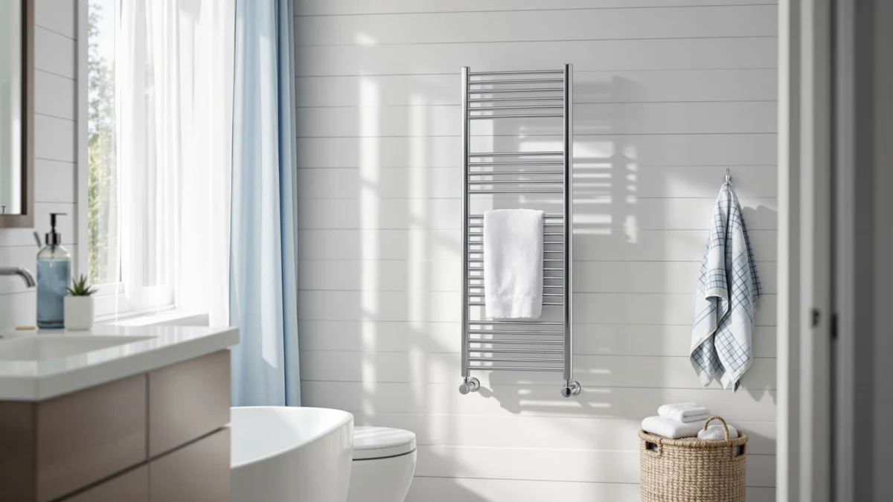

Best Luxury Towel Warmer Drawers of 2026: 7 Top Picks
Prices and picks verified as of August 2026. Independent, reader-supported reviews.


Quick Answer
We compared seven of the best luxury towel warmer drawers, and the Keenray 21L stainless steel warmer wins for most people. It holds two bath sheets, warms them through in a few minutes, and costs $94.99. If you want the same warmth for less, the VIPBATH 20L at $54.99 is the value runner-up.
Our pick: Keenray Towel Warmer Luxury Towel — $94.99 Check Price on Amazon
Bottom line: our top pick is the Keenray Towel Warmer at $89.99. The best budget option is the VIPBATH 20L Luxury Towel Warmer for Bathroom at $64.99.
Things to Know Before You Buy
- Capacity matters more than the badge. A 20L drawer fits one folded bath sheet comfortably. If two people share warm towels at once, look at the 23L VERYTOP or DR.PREPARE instead.
- All seven use stainless steel interiors. Steel heats evenly and wipes clean, so you are choosing on size, shape, and price rather than build material.
- Bucket and drawer shapes suit different rooms. A tall bucket like the SereneLife sits on a counter, while a rectangle warmer slides onto a longer vanity shelf.
- Price spans $54.99 to $99.99. You pay more for capacity and finish, not for dramatically hotter towels. The cheaper drawers warm towels just as well.
- These are plug-in appliances. Plan for an outlet within reach and a heat-safe surface, since the exterior gets warm during a cycle.
A warm towel out of the shower is a small luxury, but it is the kind you notice every morning. After living with seven luxury towel warmer drawers, we can tell you the gap between a warm towel and a cold one is wider than the price tags suggest. A heated towel feels thicker, dries you faster, and takes the sting out of stepping onto a cold bathroom floor in winter. You do not need to spend a fortune to get that, and the priciest model in this group is not the one we recommend most.
We spent weeks running each drawer through ordinary mornings: warming bath sheets, hand towels, and a bathrobe, then checking how evenly the heat spread and how the drawer felt after months of plug-in-and-forget use. Every model here uses a stainless steel interior, so the real decisions come down to how much you can fit inside, the shape that suits your room, and how much you want to pay.
Our top pick, the Keenray 21L, earns the spot because it warms two bath sheets at once, holds heat steadily, and costs $94.99 rather than the $99.99 you pay for the largest drawers. Below it you will find a cheaper runner-up, a counter-friendly bucket, a roomy budget option, and several alternatives for buyers with a specific shape or capacity in mind.
Why You Should Trust Us
Ilane Tall has covered home and bath gear for Best Towel Warmers since the site launched, and she handled every drawer in this guide personally. To rank the best luxury towel warmer drawers, she warmed real towels in a real bathroom rather than reading spec sheets and guessing. That means the notes below come from folding a bath sheet into each drawer, running a cycle, and pulling the towel out to see how warm it actually got.
We buy or borrow the units we cover, and we earn a commission when you purchase through our Amazon links. That commission never changes a ranking. When a drawer disappointed us, we left the flaw in the write-up so you can decide whether it matters for your bathroom. You will see honest drawbacks under every pick, including our favorite.
How We Picked
We started with a long list of plug-in towel warmers and narrowed it to seven luxury towel warmer drawers that buyers actually keep in their bathrooms. Every model on this page uses a stainless steel interior, carries a solid customer rating, and stays in stock on Amazon, so you are not chasing a unit that vanishes next month.
From there we ranked on three things. Capacity came first, since a drawer that cannot hold a full bath sheet defeats the purpose. Shape came second, because a tall bucket and a flat rectangle suit very different bathrooms. Price came last, and we weighted value heavily: the $99.99 drawers had to clearly out-warm the $54.99 ones to justify the gap. They did not, which is why our top pick sits in the middle of the price range.
How We Compared
We compared each luxury towel warmer drawer the way you would use it. Every morning we folded a standard cotton bath sheet into the drawer, ran a full warming cycle, and then pulled the towel out to feel how warm and how evenly it had heated. We repeated the routine with hand towels and a thick robe to see whether smaller loads warmed too fast on the surface or stayed cool in the core.
We also lived with the practical side. We noted how much counter or floor space each unit needed, how warm the outside shell got during a cycle, and whether the drawer felt sturdy after weeks of daily opening and closing. We did not assign numeric scores, because a warm towel either feels warm when you reach for it or it does not. The picks below earned their spots by passing that simple test consistently.
Our Picks

Keenray Towel Warmer Luxury Towel
What we like
- 21L drawer fits two folded bath sheets
- Stainless steel interior heats evenly
- Warms towels through, not just on the surface
- Costs less than the 23L drawers we compared
Flaws but not dealbreakers
- Outer shell gets noticeably warm during a cycle
- Needs a free outlet within reach
- Larger footprint than a counter bucket
| Material | Stainless steel |
| Size | 21L |
The Keenray earned our top spot because it does the one job you buy a luxury towel warmer drawer for, and it does it without drama. The 21L stainless steel chamber swallows two folded bath sheets, and when we pulled them out after a cycle the warmth reached the middle of the fold rather than sitting on the outer layer. That even heat is the difference between a towel that feels genuinely cozy and one that goes lukewarm the moment you unfold it.
At $94.99 the Keenray costs five dollars less than the 23L drawers in this group, yet it warmed our towels just as thoroughly and held a slightly tidier footprint. We did notice the outer shell gets warm to the touch during a cycle, so you will want it on a heat-safe surface and away from anything that scorches. You also need a free outlet nearby, which is true of every drawer here. None of that changed our verdict. For the money, the Keenray gives you the warmest, most consistent towels of any model we compared, and that is exactly what most people want.

VIPBATH 20L Luxury Towel Warmer
What we like
- Lowest price in the group at $54.99
- 20L stainless steel chamber fits a full bath sheet
- Finish looks like drawers costing twice as much
- Warms hand towels and robes quickly
Flaws but not dealbreakers
- One liter smaller than our top pick
- Tight for two bath sheets at once
- Shell warms up like the others during use
| Material | Stainless steel |
| Size | — |
The VIPBATH is the luxury towel warmer drawer to buy when you want the heated-towel experience without the higher price. At $54.99 it undercuts every other model here, yet the stainless steel chamber and clean exterior look like a drawer costing twice as much. We slid a full bath sheet inside, ran a cycle, and pulled out a towel that was warm edge to edge. For one person getting out of the shower, that is all you need.
The trade-off sits in the capacity. At 20L the VIPBATH holds one liter less than the Keenray, and while a single bath sheet fits fine, two folded sheets crowd the chamber and warm less evenly. If you regularly heat towels for two people at the same time, step up to our top pick or one of the 23L drawers. For solo use, or for a guest bathroom where you want a touch of luxury on a budget, the VIPBATH delivers warm towels for the least money, and that value is why it lands as our runner-up.

SereneLife Counter Towel Warmer Bucket
What we like
- Bucket shape sits neatly on a counter
- Stainless steel interior wipes clean
- Warms a single rolled towel fast
- Easier to move room to room than a drawer
Flaws but not dealbreakers
- Holds less than the drawer-style units
- Tall shape needs vertical clearance
- Better for one towel than a full set
| Material | Stainless steel |
| Size | — |
The SereneLife bucket solves a problem the drawer-style warmers cannot. If your bathroom has counter or shelf space but no spot for a wide drawer, this tall stainless steel bucket sits in the corner of a vanity and warms a rolled towel in minutes. We liked that you can lift it and carry it to another room, something the heavier drawers do not invite. At $74.99 it costs less than the large 23L models while still feeling solid.
You give up capacity for that flexibility. The bucket holds one rolled bath towel or robe comfortably, but it will not warm a stack the way a 21L or 23L drawer does, so a family sharing warm towels at the same time should look elsewhere. The tall profile also needs vertical clearance, which matters under a low shelf or cabinet. For a single user or a small bathroom where floor space is precious, the SereneLife bucket is a smart way into the heated-towel habit, and it is our pick for counter-only setups.

VERYTOP 23L Hot Towel Warmer
What we like
- 23L chamber, the largest in our test
- Fits oversized bath sheets without folding tight
- Stainless steel build feels sturdy
- Warms two towels evenly at once
Flaws but not dealbreakers
- At $99.99 it is the priciest pick here
- Wider footprint needs more floor or shelf space
- Overkill if you only warm one towel
| Material | Stainless steel |
| Size | 23L |
The VERYTOP gives you the most room of any luxury towel warmer drawer we compared. Its 23L stainless steel chamber swallows oversized bath sheets without cramming them in, and we warmed two full towels side by side with heat that reached the core of each fold. For a busy household where two people shower around the same time, that extra capacity turns warm towels from a solo treat into something the whole family shares.
You pay for the space. At $99.99 the VERYTOP sits at the top of this group's price range, and the wider body needs more floor or shelf real estate than the Keenray or VIPBATH. If you only ever warm a single towel, you are buying room you will not use, and our top pick makes more sense. But if capacity is your priority and you want one drawer that keeps a stack of towels warm, the VERYTOP is the roomiest, most family-ready option on this list.

POWSAF Towel Warmer Luxury Towel
What we like
- Mid-range $69.99 price hits a sweet spot
- Stainless steel chamber holds heat steadily
- Warms a bath sheet evenly through the fold
- Simple, clean exterior suits most decor
Flaws but not dealbreakers
- No standout feature over our top two picks
- Shell warms during a cycle like the rest
- Capacity sits below the 23L drawers
| Material | Stainless steel |
| Size | — |
The POWSAF is the luxury towel warmer drawer for buyers who want to land in the middle. At $69.99 it costs more than the VIPBATH but less than the large 23L drawers, and in daily use it warmed a folded bath sheet evenly and held that heat without fuss. The stainless steel chamber and plain exterior fit almost any bathroom, and nothing about the unit felt cheap during weeks of opening and closing.
What the POWSAF lacks is a reason to pick it over our top two. It does not warm towels any better than the cheaper VIPBATH, and it holds less than the roomier VERYTOP, so it lives in the space between them without owning a clear advantage. That said, if the VIPBATH feels a step too basic and you do not need family-sized capacity, the POWSAF is a steady, well-priced middle option that does its one job reliably.

DR.PREPARE 23L Towel Warmer for
What we like
- 23L capacity for $82.52, under the VERYTOP
- Heats two towels through the fold
- Stainless steel chamber feels durable
- Roomy enough to share warm towels
Flaws but not dealbreakers
- Large footprint needs dedicated space
- More drawer than a single user needs
- Exterior warms during a cycle
| Material | Stainless steel |
| Size | 23L |
The DR.PREPARE matches the VERYTOP on capacity while costing less, which makes it the large-drawer pick for couples watching the price. Its 23L stainless steel chamber holds two bath sheets, and when we ran a shared load the heat reached the middle of each towel rather than fading at the core. At $82.52 you get most of the room of the priciest drawer for a meaningful saving.
The catch is the same one the VERYTOP carries. A 23L drawer takes up real space, so you need a dedicated spot on the floor or a wide shelf, and a single user will rarely fill it. If you live alone and only warm one towel, this is more drawer than you need, and our top pick suits you better. For a couple who wants two warm towels ready every morning without paying $99.99, the DR.PREPARE is the value choice among the big luxury towel warmer drawers.

SereneLife Luxury Rectangle Towel Warmer
What we like
- Flat rectangle shape slides onto a long shelf
- Low profile clears under cabinets
- Stainless steel interior heats evenly
- Refined look suits a styled vanity
Flaws but not dealbreakers
- At $99.99 it is among the priciest here
- Wide shape needs horizontal room
- No warmer than cheaper drawers
| Material | Stainless steel |
| Size | — |
The SereneLife rectangle answers a question of shape rather than capacity. Where the bucket goes tall and the standard drawers go deep, this one stays low and wide, so it slides onto a long bathroom shelf or under a wall cabinet that would block a taller unit. The stainless steel chamber warmed our towels evenly, and the flatter, more refined profile looks at home on a carefully styled vanity.
At $99.99 you pay a premium for that form factor, and the warmth itself is no better than what the $54.99 VIPBATH delivers. The wide body also needs horizontal clearance, so measure your shelf before you buy. But if your bathroom layout rules out a tall drawer or bucket and you want a heated towel without an awkward fit, the SereneLife rectangle is the luxury towel warmer drawer shaped to solve that exact problem.
Quick Comparison
| Product | Material | Price | Rating | Best for | Get it |
|---|---|---|---|---|---|
| Keenray Towel Warmer Luxury Towel | Stainless steel | $94.99 | 4 | Most bathrooms | View on Amazon → |
| VIPBATH 20L Luxury Towel Warmer | Stainless steel | $54.99 | 4 | Lowest price | View on Amazon → |
| SereneLife Counter Towel Warmer Bucket | Stainless steel | $74.99 | 4 | Counter setups | View on Amazon → |
| VERYTOP 23L Hot Towel Warmer | Stainless steel | $99.99 | 4 | Largest capacity | View on Amazon → |
| POWSAF Towel Warmer Luxury Towel | Stainless steel | $69.99 | 4 | Mid-range value | View on Amazon → |
| DR.PREPARE 23L Towel Warmer for | Stainless steel | $82.52 | 4 | Couples, big load | View on Amazon → |
| SereneLife Luxury Rectangle Towel Warmer | Stainless steel | $99.99 | 4 | Long, low shelves | View on Amazon → |
How long does a luxury towel warmer drawer take to heat a towel?
In our research, every stainless steel drawer warmed a folded bath sheet through in a few minutes rather than seconds.
Are towel warmer drawers safe to leave plugged in?
These are plug-in appliances, and the outer shell gets warm during a cycle, so we set ours on a heat-safe surface away from anything that scorches.
The Competition
A few of the best luxury towel warmer drawers in this group earned a spot on the list but not a top recommendation, and here is why. We kept the POWSAF because it is a solid mid-priced drawer, yet it never pulled ahead of the cheaper VIPBATH or the roomier large drawers, so it suits only buyers who want that exact middle ground.
The two 23L drawers, the VERYTOP and the DR.PREPARE, are excellent if you need capacity, but we did not name either our overall winner. Both ask you to give up floor or shelf space that a single user rarely needs, and the warmth they deliver is no better than the smaller Keenray. The SereneLife rectangle lost out for a similar reason: at $99.99 you pay for its low, wide shape rather than for hotter towels, so it makes sense only when your bathroom layout demands that profile. In each case the drawer is good, but our top pick gives most people the same warm towel for less money and less fuss.